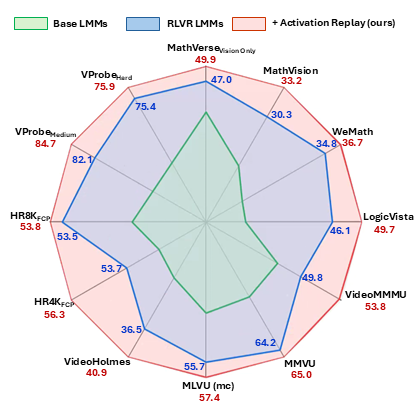

Abstract
Recently, Reinforcement Learning with Verifiable Rewards (RLVR) has emerged as an effective approach to incentivizing reasoning capability in Large Multimodal Models (LMMs), while the underlying mechanisms behind this post-training paradigm are poorly understood. We begin by exploring how input activations are affected by RLVR through the perspective of logit lens. Our systematic investigations across multiple post-trained LMMs suggest that RLVR shifts low-entropy activations unexpectedly, while high-entropy ones are less affected. We further demonstrate that such phenomena are associated with LMM reasoning by controlled experiments, suggesting a potentially beneficial role of modulating low-entropy activations.
To this end, we propose Activation Replay, a novel simple yet effective training-free approach that boosts multimodal reasoning of post-trained LMMs without requiring expensive policy optimization. Our design involves manipulation of visual tokens at test time, replaying low-entropy activations from the input context of base LMMs to regulating the RLVR counterparts. Activation Replay triggers better reasoning across diverse scenarios, including mathematics, o3-like visual agents, and video reasoning. We further show that Activation Replay boosts Pass@K and mitigates narrower reasoning coverage of RLVR. Our design is compared against alternative choices, such as replaying high-entropy activations instead of low-entropy ones, or direct cross-model intervention instead of manipulating input tokens, demonstrating the superiority of our implementation. Codes will be made publicly available.
